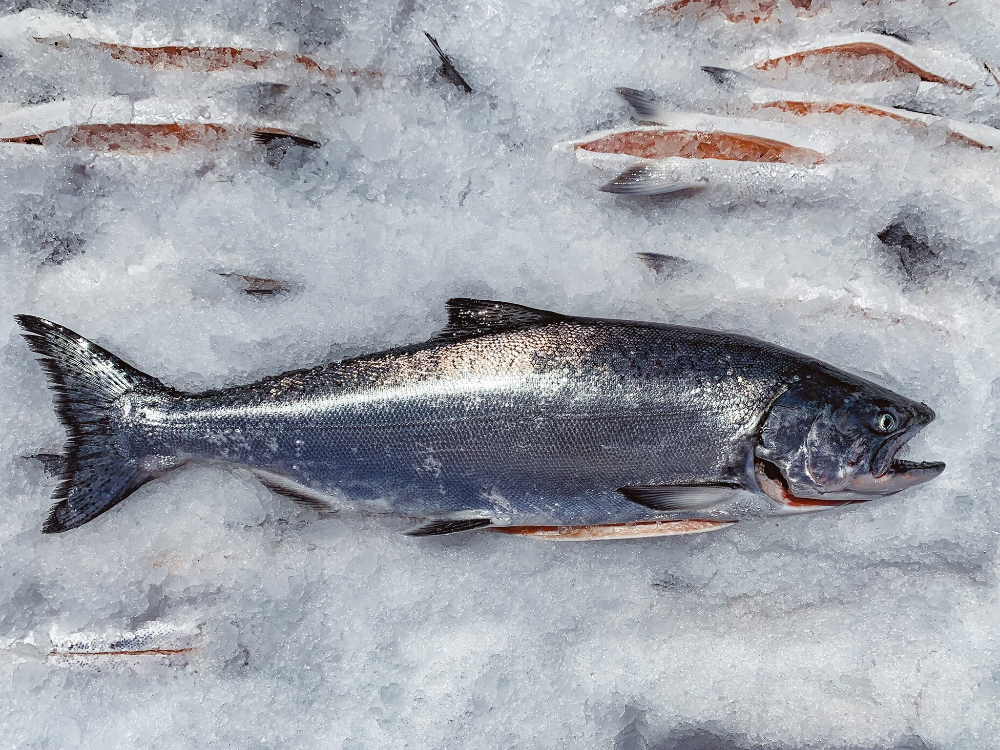

Atlantic salmon, an anadromous species, have a complex life history which begins when they hatch as fry in their natal streams, then rear as juveniles in fresh water streams and tributaries and finally migrate to sea for their adult life history stage. This species usually spends two to three years in freshwater habitats before migrating to the ocean. They also spend two to three years in the ocean before returning to their natal streams to spawn.

0